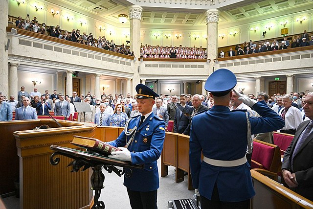

Новий рік
Українці святкують Новий рік у ніч з 31 грудня на 1 січня, з радянських часів у багатьох оселях саме до Нового року вбирають ялинку (штучну або живу), накривають святковий стіл і збираються разом із родичами та друзями коло столу. Святкова вечеря зазвичай складається з кількох страв, серед яких часто (традиція з радянських часів) є салат олів'є, мандарини, традиційний напій — ігристе вино. З віддаленням від радянських часів святковий стіл стає різноманітнішим, зокрема, популярними новорічними стравами стали стейки, м'ясо по-французьки, вегетаріанські замінники м'яса, запечені індичка чи качка, свиняча вирізка, грецький салат тощо
28 червня — День Конституції України

День Конституції України — єдине державне свято, закріплене в самій Конституції:
Стаття 161. День прийняття Конституції України є державним святом — Днем Конституції України.
Ухвалення Конституції закріпило правові основи незалежної України, її суверенітет і територіальну цілісність, стало важливим кроком у забезпеченні прав людини та громадянина, сприяло подальшому підвищенню міжнародного авторитету України на світовій арені.
24 серпня — День Незалежності України
День Незале́жності Украї́ни — державне свято України, яке відзначається щороку 24 серпня на честь ухвалення Акту проголошення незалежності України та від'єднання від СРСР, що заведено вважати датою відновлення незалежної держави Україна.
1 жовтня — День захисників і захисниць України
День захисників і захисниць України — державне свято України, що відзначається щороку 1 жовтня в день Покрови Пресвятої Богородиці. Започатковано 14 жовтня 2014 року президентським указом із назвою «День захисника України». Через реформу церковного календаря в Україні з 2023 року святкування перенесено з 14 жовтня на 1 жовтня.
З 2015 року є державним святом і неробочим днем. У серпні 2021 року свято було перейменовано на «День захисників і захисниць України» для встановлення статевої рівності.
25 грудня — Різдво Христове
Кульмінація свята — урочиста літургія, що правиться на Святий Вечір; у східній традиції правиться літургія Василія Великого.
Після служби християни збираються родиною на святу вечерю. Атрибути свята — вертеп, Різдвяна зірка (Звізда), вистави, ярмарок, пісні, колядки, різдвяні вінки, ялинки тощо.
В Україні святкується з середньовіччя.